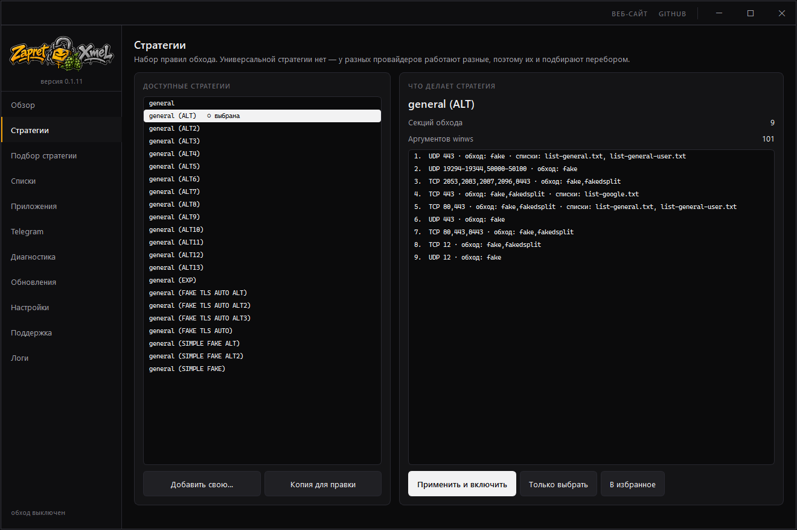

Одна кнопка
Обход включается службой Windows или обычным процессом. Служба стартует вместе с системой — даже до входа в неё и без запущенного окна.

Свободный интернет каждому
Одно окно вместо батников и консольных меню: обход блокировок, прокси для Telegram и подбор стратегии перебором. Чужие инструменты программа ставит и обновляет сама — разбираться с ними отдельно не нужно.





Обход включается службой Windows или обычным процессом. Служба стартует вместе с системой — даже до входа в неё и без запущенного окна.
Программа перебирает все стратегии сборки и проверяет сервисы разом: YouTube, Discord, остальное из списка целей.
Клиент Telegram стратегии не чинят — его чинит отдельный локальный прокси tg-ws-proxy. Программа ставит и обновляет его сама, настроек он не требует.
Пропустить через обход отдельную игру или клиент: программа записывает, куда он ходит, и строит из этого фильтр.
Полсотни проверок системы с объяснением на русском и кнопкой «починить». Разбор нейросетью — по желанию, пакет для чат-бота выгружается без ключей.
Ядро обновляется из официальных релизов Flowseal, с бэкапом и откатом. Сама программа обновляет себя сама.
Победителем считается только та стратегия, что превзошла замер без обхода.
Перебор всегда начинается с замера без обхода. У многих провайдеров проверяемые адреса открываются и так — без точки отсчёта «лучшей» оказалась бы стратегия, которая просто ничего не сломала.
Счёт идёт по сервисам, а не общей суммой проверок: стратегия, чинящая десяток проверок YouTube и ломающая Discord, не должна обходить ту, после которой работает и то, и другое. Если победитель что-то так и не починил, об этом сказано прямо, а не спрятано в итоговой цифре.
Включённый VPN обесценивает любую проверку — через туннель открывается всё подряд. Программа замечает туннель и не запускает подбор без согласия.
ZapretXmel.exe.Ядро zapret внутрь не вшито: при первом запуске оно скачивается из официальных релизов Flowseal, поэтому у вас всегда свежая сборка, а не та, что была актуальна на момент нашей.